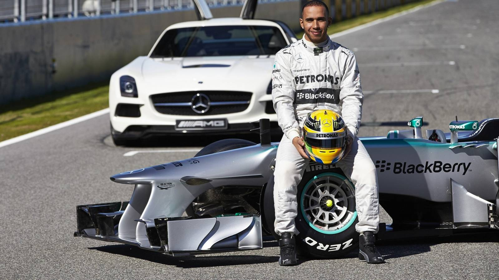
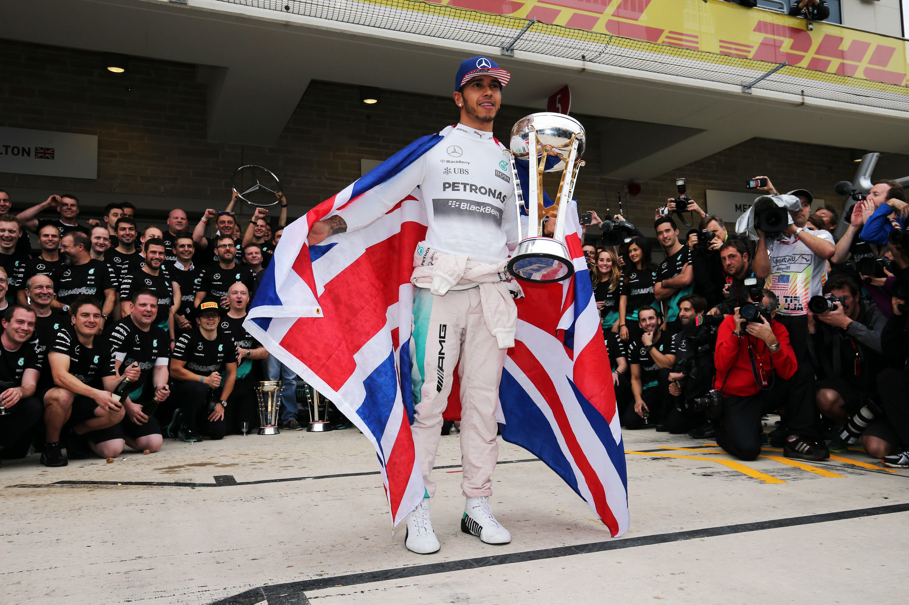
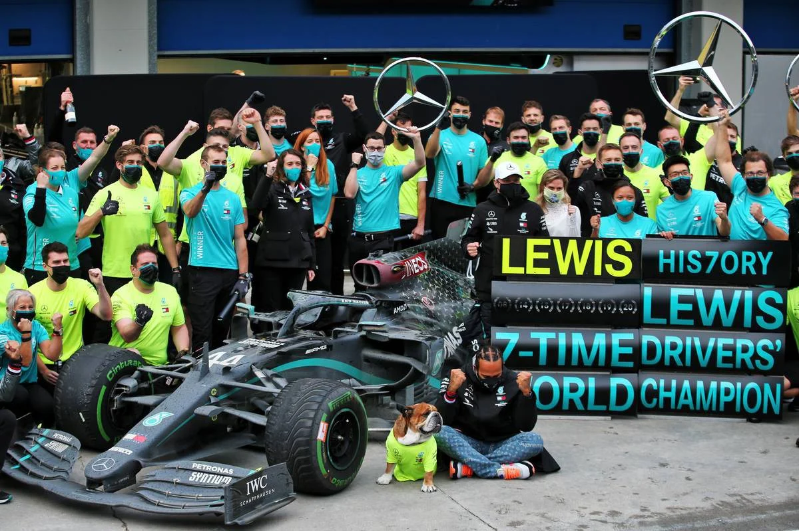

L'ère Mercedes (2013 - 2024)
À la fin de la saison 2012, Lewis Hamilton prend un pari audacieux qui redéfinira l'histoire de la Formule 1 : il quitte McLaren pour s'engager avec l'écurie Mercedes AMG F1. Bien que contesté par de nombreux observateurs à l'époque, ce choix stratégique va s'avérer le plus fructueux de l'ère moderne du sport automobile.
2013 : Les fondations d'un nouveau projet
Pour sa première année au sein des Flèches d'Argent, le pilote britannique s'intègre rapidement et s'impose dès le Grand Prix de Hongrie. Il conclut l'exercice à la quatrième place du classement général, posant les bases techniques et humaines indispensables aux succès futurs de l'équipe.

2014 - 2016 : La révolution hybride et le duel intense avec Rosberg
L'introduction des unités de puissance V6 turbo hybrides en 2014 inaugure une domination sans partage de Mercedes. Hamilton se retrouve engagé dans une lutte psychologique et sportive acharnée face à son coéquipier Nico Rosberg :
- 2014 : Auteur de onze victoires, il s'empare de son deuxième titre mondial lors de la finale disputée à Abou Dhabi.
- 2015 : Sur une dynamique implacable, il sécurise son troisième sacre mondial dès le Grand Prix des États-Unis.
- 2016 : Au terme d'un suspense haletant jusqu'à la dernière course, il s'incline de justesse face à son rival allemand pour le titre, malgré dix victoires à son actif.

2017 - 2020 : L'apogée et l'égalisation du record historique
Libéré d'une rivalité interne destructrice après la retraite de Rosberg, Hamilton fait face à de nouveaux adversaires redoutables, notamment Sebastian Vettel au volant de Ferrari, puis Max Verstappen. Faisant preuve d'une régularité clinique et d'une maîtrise absolue sous la pluie, il enchaîne les couronnes :
- 2017 & 2018 : Il triomphe au terme de batailles tactiques serrées pour décrocher ses quatrième et cinquième titres.
- 2019 : Il s'offre un sixième titre mondial, se positionnant à une seule longueur du record absolu détenu par Michael Schumacher.
- 2020 : Dans une saison perturbée par la crise sanitaire, il égale le record légendaire de sept titres mondiaux de Schumacher tout en s'investissant publiquement pour l'égalité et la justice sociale.

2021 - 2024 : Résilience, turbulences et triomphe d'adieu
L'évolution réglementaire de 2022 plonge Mercedes dans des difficultés techniques inattendues. Malgré des monoplaces en retrait face à la concurrence, Hamilton maintient un engagement sans faille :
- 2021 : Une saison d'une intensité folle s'achève sur un dénouement polémique à Abou Dhabi, le privant d'un huitième titre historique dans l'ultime boucle.
- 2022 - 2023 : Privé de victoires par un manque récurrent de performance aérodynamique, il continue de porter l'équipe en arrachant de superbes podiums.
- 2024 : Il renoue avec la plus haute marche du podium de manière éclatante en s'imposant devant son public lors du Grand Prix de Grande-Bretagne à Silverstone, signant l'un des moments les plus émouvants de sa carrière avant d'officialiser son transfert vers Ferrari.